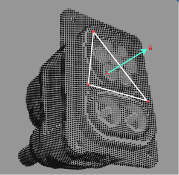
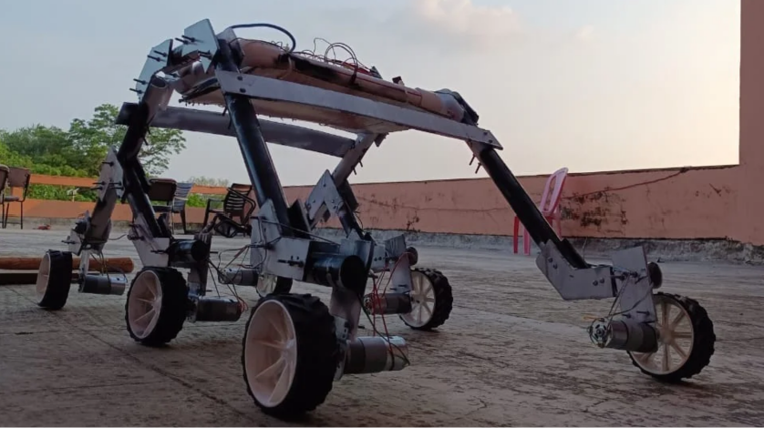

Projects

Confidence Calibration in Neural Text-to-Speech
Evaluated uncertainty in prediction and miscalibration in neural TTS models, applying post-hoc confidence calibration to lower Expected Calibration Error (ECE) from 0.09 to 0.03.
PyTorch
HuggingFace
Calibration (ECE)